So, what’s been happening?
The highlights of the past few weeks
Well, it’s nearly the end of my first semester here. I’ve been a lot busier with study and Aikido recently so I haven’t had time to do as much interesting stuff as before. So this is going to be a catch-up post, a “best bits” reel of the past five weeks in preparation for the season finale, Disneyland. Season 2 (otherwise known as the summer holidays) will start in a couple of weeks.
Freshman Camp
Every year the first-year sports club members get together for a weekend of team building and pep talking. This came as a relief to me, since I misunderstood the information we were given and was expecting a weekend of hard training. Although, to be honest, a weekend of hard training would be a lot more memorable than what actually happened.
We stayed at a hotel in Yamanashi prefecture, which is a wonderfully picturesque part of Japan right next to Mt Fuji. It’s a couple of hours’ bus journey from the university so (considering we left at lunchtime on Saturday and returned early Sunday evening) we didn’t actually spend a lot of time away. The hotel we were in was obviously pretty cheap, but it was still scrupulously clean with ultra-respectful staff.
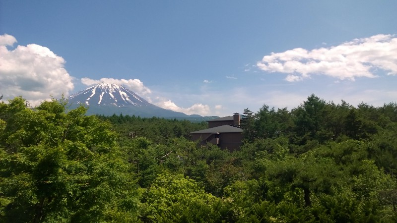
I really can’t say much about the activities, partly because there weren’t very many of them and partly because I’ve forgotten a lot of it already. So much for this being an up-to-date journal …
Anyway, one thing that stood out was a motivational talk by a guy who’s worked with many top Japanese sportspeople and company executives. I remember it mainly because I understood about half of what the man was saying, which I’m pretty pleased with. I certainly wouldn’t have known what he was talking about at the start of the year. Aside from that there was a strange performance/competition thing in the evening (which I didn’t understand at all), a video of sports clubs from years gone by and a lot of speeches from various members of the school staff. All in all, it was good to get to know the other Aikido first-years better, but it wasn’t the most amazing experience I’ve had here.
Suica-wari
This, on the other hand, is the sort of stereotypically Japanese thing that I thought couldn’t possibly happen in real life. It literally means “watermelon splitting” and is something like pinata, except that instead of hitting a paper animal you’re hitting a watermelon. And, since this was an Aikido club event, instead of a stick we used a wooden sword.
Apparently this is usually done at the beach, but we did it at uni after the final training session of the term. The watermelon gets put on the ground (on a tarpaulin in our case) and people take it in turns to be blindfolded and given the sword. The person is then spun around, after which everyone starts shouting which way the watermelon is. It’s really confusing when twenty people are shouting out different instructions in a foreign language (particularly since you have to be quite accurate to actually hit the melon) but eventually you raise the sword up like a samurai and, in theory, bring it slashing down onto the melon. In practice, the sword quite often smacks into the ground just beside the melon, causing (in our case) many sore hands and one broken sword. I guess that’s why it’s usually done on sand …
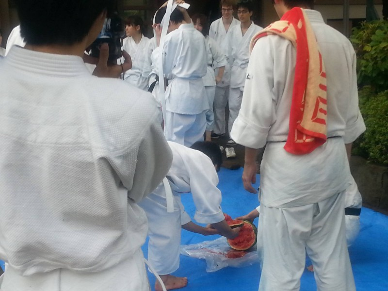
The advantage of using a wooden sword rather than just a stick is that it cuts the melon fairly cleanly, meaning you can eat it afterwards without wasting any. And for anyone wondering, I managed to hit (and shatter) my melon on my second attempt.
Asakusa
Home to the most famous temple in Tokyo, this is definitely one of the coolest places I’ve been so far. Which means I took a whole lot of photos. Which means I’ll show you those instead of just writing about it.
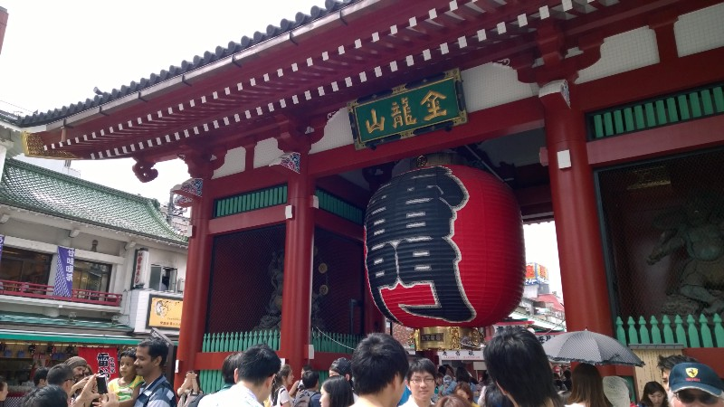
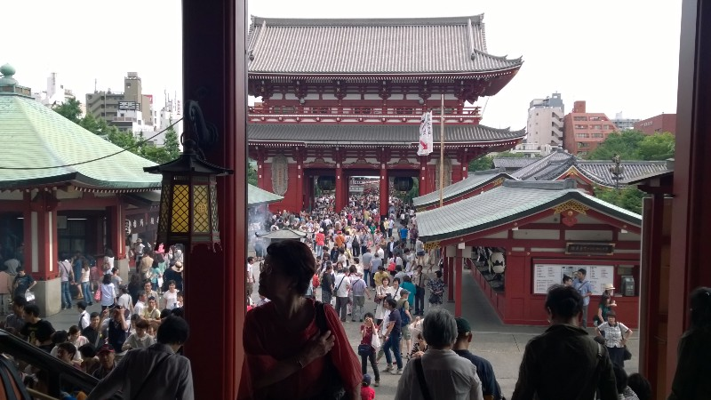
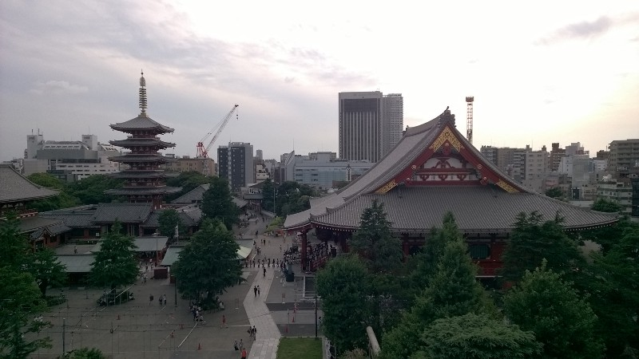
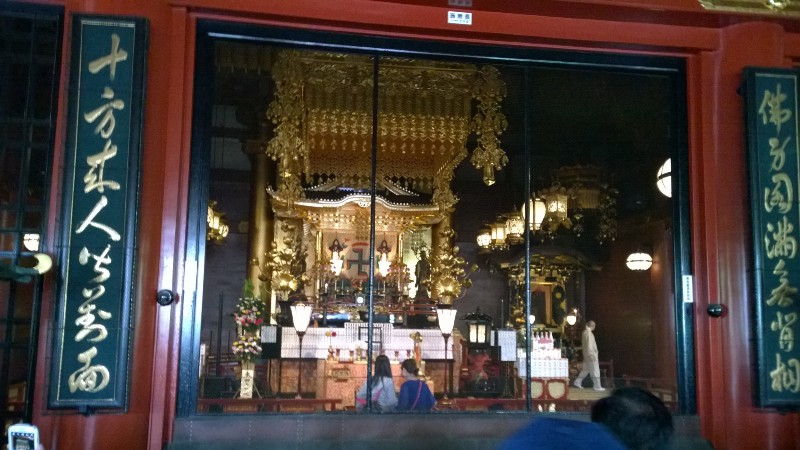
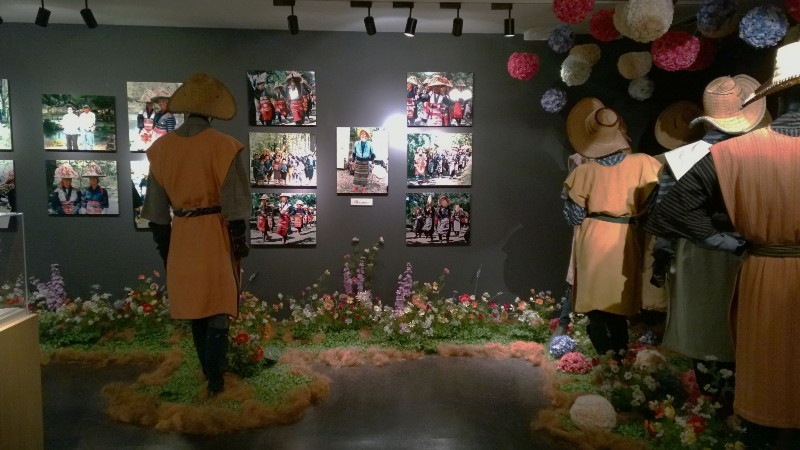
Ueno Zoo
Another place where I took a whole lot of photos. It’s pretty much like zoos everywhere, but I like zoos everywhere so I enjoyed it.
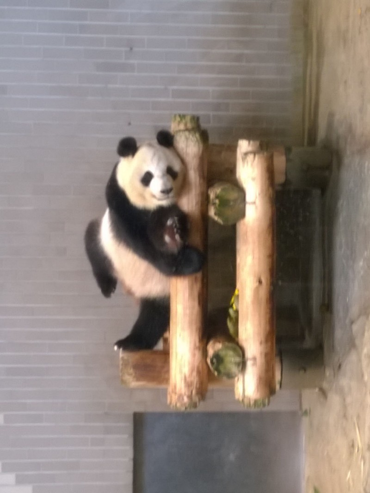
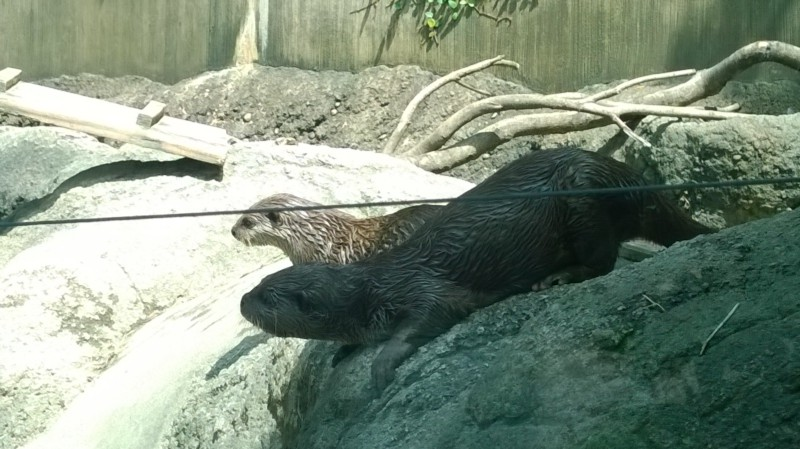
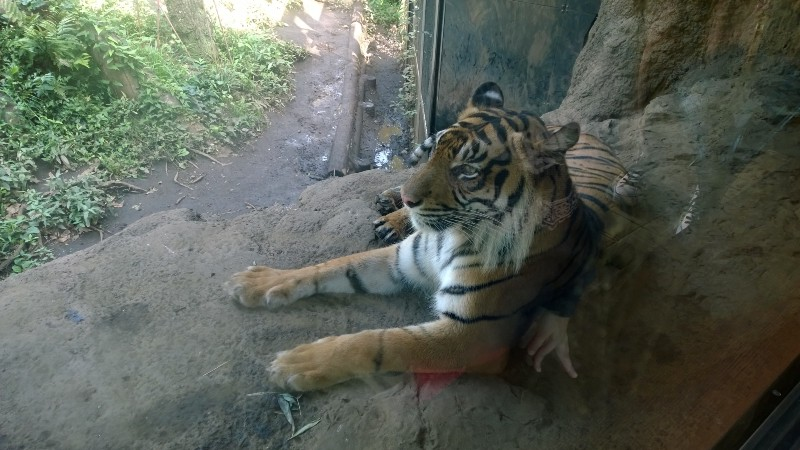
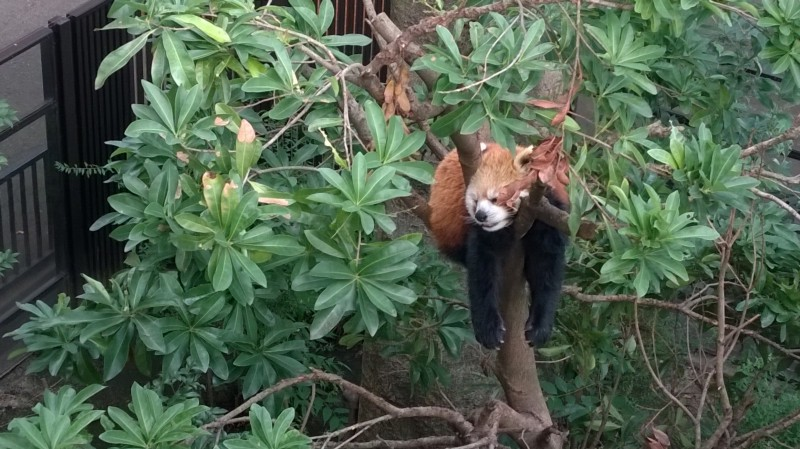
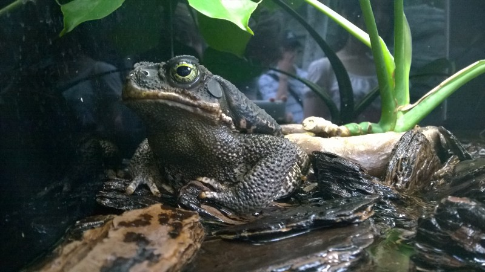
And finally, a quick note about the weather. Japan’s rainy season (known as tsuyu) runs from the middle of June to the middle of July and although it didn’t rain nearly as much as I expected (aside from a few massive downpours) the weather has been horribly hot and humid for the past month or so. It should be getting slightly less humid from now on, but it’s also likely to be even hotter, so I’m incredibly thankful for the air conditioning in my room.
Weird things
- Japanese people seem to go to temples and pray ritually without having much organised religion … I imagine it would be fascinating for anyone doing a Religious Studies major
- Many people live several hours’ journey from where they work (I guess it’s more of a Tokyo thing than a country-wide thing) so you see vast numbers of people sleeping on the trains. I thought having to get up at 5am for Saturday training every week was bad, but having to do it every day for work must be so much worse!
- Although Japanese food has a reputation for being healthy, they don’t seem to use many vegetables (or much fish or meat for that matter — obento, the Japanese style of packed lunch, is usually a large amount of rice with a small piece of fish and a few scraps of vegetable/seaweed on the side). Unless their home cooking is drastically different from what they bring to school for lunch, a high-carb, low-protein, low-veg diet must be better than many dieticians say …